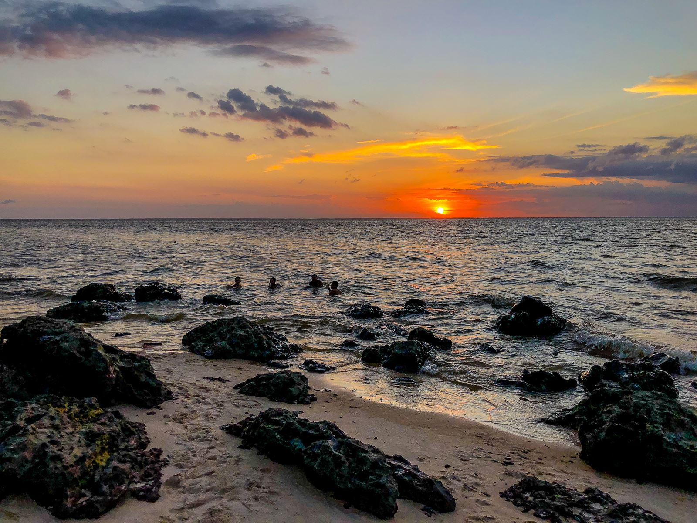
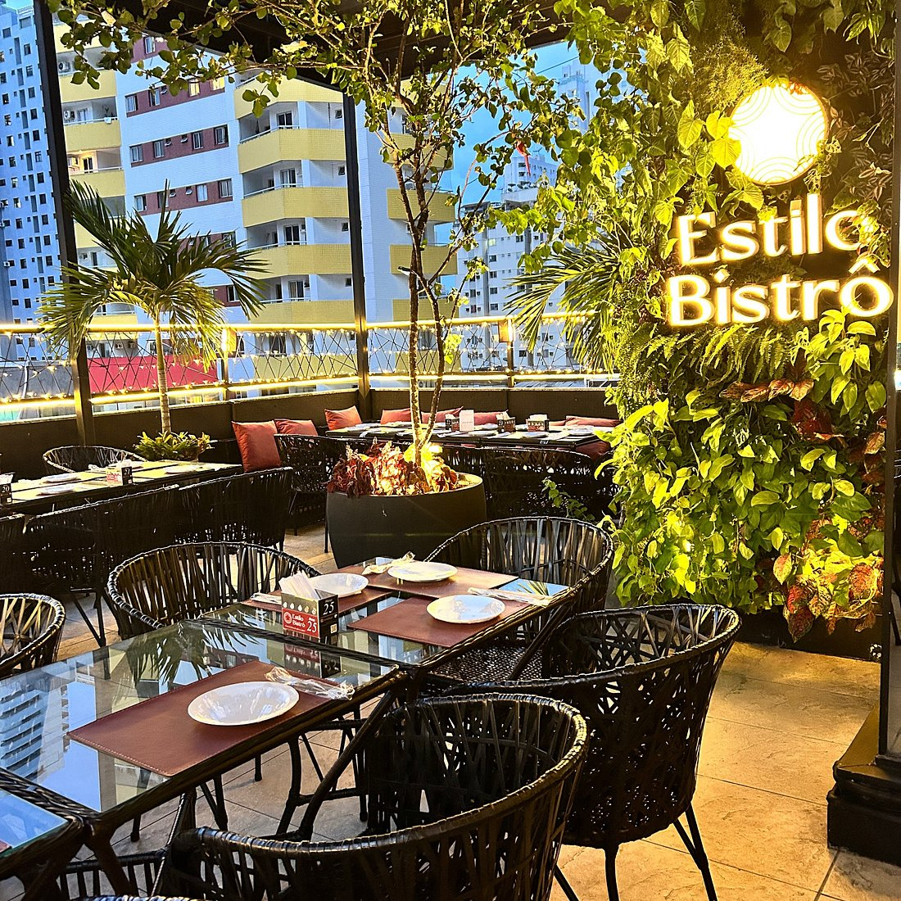
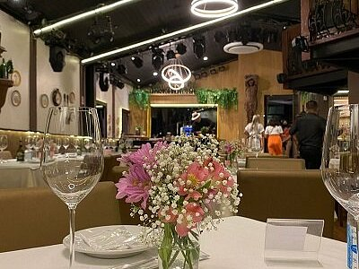

Hotel Ibis
O Hotel ibis Styles Belém Hangar está localizado na Av. Duque de Caxias,1538, bairro Marco,Belém-PA.
Ver mais
Descubra os melhores pontos turísticos, restaurantes e hotéis para aproveitar ao máximo sua viagem em Belém e sua região.
Descubra os melhores lugares para se hospedar
O Hotel ibis Styles Belém Hangar está localizado na Av. Duque de Caxias,1538, bairro Marco,Belém-PA.

O Hotel Ipe está localizado na Av. Governador José Malcher, 2953, bairro São Brás, Belém-PA.
Ver mais
O Belém Soft Hotel está localizado na Avenida Brás de Aguiar, 836, bairro Nazaré, Belém-PA.
Ver maisDescubra os melhores pontos turísticos para visitar em Belém e região

A Estação das docas está localizada na Av. Boulevard Castilho França, s/n - Cidade Velha (próximo ao Ver-o-Peso)
Ver mais
situada no município de Belém, no estado do Pará, localizada a cerca de 20 a 22 km a noroeste do centro da capital
Ver mais
A Ilha do Combu fica localizada no município de Belém, no estado do Pará, a apenas 15 minutos de barco. Situada no Rio Guamá
Ver maisConfira os melhores restaurantes para experimentar a culinária de Belém e região

Localiza-se no Espaço Cultural Casa das Onze Janelas, na Rua Siqueira Mendes, s/n, Cidade Velha..
Ver mais
Localiza-se na Travessa Wandenkolk, número 593, esquina com a Travessa Antônio Barreto
Ver mais
localiza-se na Avenida Conselheiro Furtado, 1420 - Nazaré
Ver maiskkkkkkkkkkkkkk
aaaaaaaaaaaaa
bbbbbbbbbbbbb